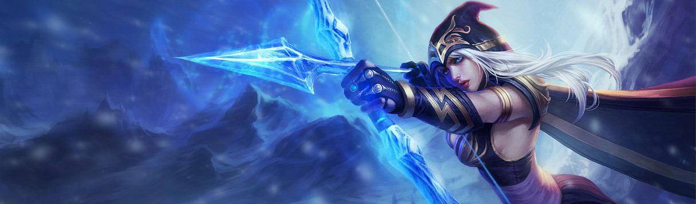

Ashe, comandante hija del hielo de la tribu de Avarosa, lidera las hordas más numerosas del norte. Impasible, inteligente e idealista, aunque incómoda en su papel de líder, utiliza los poderes mágicos ancestrales de su linaje para empuñar un arco de Hielo Puro. Su gente cree que Ashe es la heroína mitológica Avarosa reencarnada, y ella espera unificar Freljord una vez más al recuperar sus antiguas tierras tribales.
